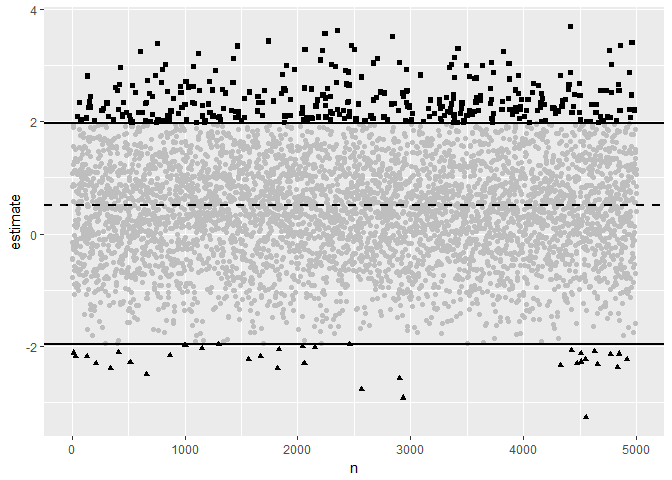
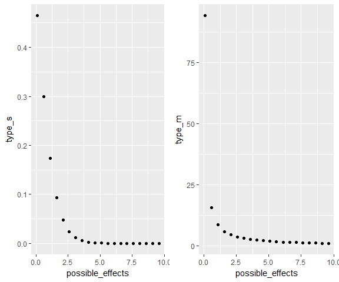
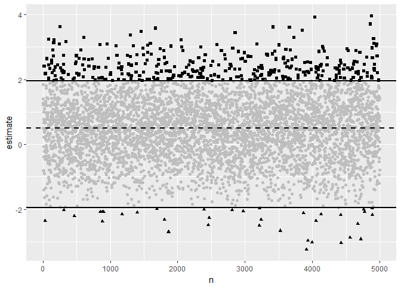

This is a online version of the vignette for my r package retrodesign. It can be installed with:
install.packages("retrodesign")In light of the replication and reproducibility crisis, researchers across many fields have been reexamining their relationship with the Null Hypothesis Significance Testing (NHST) framework, and developing tools to more fully understand the implications of their research designs for replicable and reproducible science. One group of papers in this vein are works by Andrew Gelman, John Carlin, Francis Tuerlinckx, and others which develop two new metrics for better understanding hypothesis testing in noisy samples. For example, Gelman and Carlin’s Assessing Type S and Type M Errors (2014) argues that looking at power, type I errors, and type II errors are insufficient to fully capture the risks of NHST analyses, in that such analysis focuses excessively on statistical significance. Instead, they argue for consideration of the probability you’ll get the sign on your effect wrong, or type S error, and the factor by which your effect size might be exaggerated, or type M error. Together, these additional statistics more fully explain the dangers of working in the NHST framework, especially in noisy, small sample environments.
retrodesign is a package designed to help researchers better understand type S and M errors and their implications for their research. In this vignette, I introduce both the need for the type S/M error metrics, and the tools retrodesign provides for examining them. I assume only a basic familiarity with hypothesis testing, and provide definitional reminders along the way.
An Initial Example
To nail down the assumptions we’re working with, we’ll start with an abstract example from Lu et al. (2018); the second will draw on a real world scenario and follow Gelman and Carlin’s suggested workflow for design analysis more closely.
Let’s say we’re testing whether a true effect size is zero or not, in a two tailed test.
H _ { 0 } : \mu = 0 \quad \text { vs. } \quad H _ { 1 } : \mu \neq 0
We’re assuming that the test statistic here is normally distributed. As Gelman and Tuerlinckx (2009) note, this is a pretty widely applicable assumption; through the Central Limit Theorem, it applies to common settings like differences between test and control groups in a randomized experiment, averages, or linear regression coefficients. If it helps, imagine the following in the context of one of those from your field.
Traditionally, we’d focus on Type I/II errors. Type I error is rejecting the null hypothesis, when it is true. Type II error is failing to reject the null hypothesis, when it is not true. The power, then, is just is the probability that the test correctly rejects the null hypothesis when a specific alternative hypothesis is true.
Beyond those, we’ll also consider:
- Type S (sign): the test statistic is in the opposite direction of the true effect size, given that the statistic is statistically significant;
- Type M (magnitude or exaggeration ratio): the test statistic in magnitude exaggerates the true effect size, given that the statistic is statistically significant.
Notice that both of these are conditional on the test statistic being statistically significant; we’ll come back to this fact several times.
To visualize these, we’ll draw 5000 samples from a normal distribution with mean .5, and standard deviation 1. We’ll then analyze these in a NHST setting where we have a standard error of 1. We can use sim_plot() to do so, with the first parameter being our postulated effect size .5, and the second being our hypothetical standard error of 1. If you prefer to not use ggplot graphics like I do here, set the gg argument to FALSE.
sim_plot(.5,1)
Here, the dotted line is the true effect size, and the full lines are where the statistic becomes statistically significantly different from 0, given our standard error of 1. The greyed out points aren’t statistically significant, the squares are type M errors, and the triangles are type S errors.
Even though the full distribution is faithfully centered around the true effect, once we filter using statistical significance, we will both exaggerate the effect and get its sign wrong often.
Of course, trying to find a true effect size of .5 with a standard error of 1 is extremely underpowered. More precisely, the power, Type S and type M error here are:
retro_design(.5,1)
#> $power
#> [1] 0.07909753
#>
#> $typeS
#> [1] 0.0878352
#>
#> $typeM
#> [1] 4.788594The function arguments here the same as those for sim_plot() above. If you want to work with a t-distribution instead, you’ll need to use retrodesign() instead, and provide the degrees of freedom for the df argument. retrodesign() is the original function provided by Gelman & Carlin (2014), which uses simulation rather than an exact solution to calculate the errors. It’s thus slower, but can work with t-distributions as well (the closed form solution only applies in the normal case).
A power of .07 isn’t considered good research in most fields, so most cases won’t be this severe. However, it does illustrate two important points. In a underpowered example like this, we will hugely overestimate our effect size (by a factor of 4.7x! on average), or even get its sign wrong if we’re unlucky (around 8% of the time). Further, these are practical measures to focus on; getting the sign wrong could mean recommending the wrong drug treatment, exaggerating the treatment effect could mean undertreating someone once the drug goes to market.
A Severe Example
Now that you hopefully have a sense of what type S/M error add to our understanding of NHST in the context of noisy, small sample studies, we’ll move onto a real world example, where we’ll focus on following Gelman and Carlin’s suggested design analysis through one of their examples.
We’ll be working with Kanazawa (2007), which claims to have found that the most attractive people are more likely to have girls. To be more specific, each of their ~3,000 people surveyed had been assigned a “attractiveness” score from 1-5, and they then compared the first born children of the most attractive to other groups; 56% were girls compared to 48% in the other groups. They thus obtained a difference estimate of 8%, with a p-value of .015, so significant at the traditional \alpha = .05.
Stepping back for a second, this is fishy in numerous ways. First, comparing the first borne children is an oddly specific comparison to have run- at worst, this might be a case of p-hacking. Or maybe they saw a strong comparison, and decided to test it, and in doing so fell into a Garden of Forking Paths problem. Second, if attractive people had many more girls, it seems unlikely that gender balance would be as even as it is. So again, this example has a likely spurious result, is likely to have low power, and a high chance of S/M errors.
To do a design analysis of this, Gelman and Carlin’s first step is to review the literature for a posited true effect size. There is plenty of prior research on variation in sex ratio of human births. A huge variety of factors have been studied such as race, parental age, season of birth, and so on, only finding effects from .3% to 2%. In the most extreme cases (conditions like extreme poverty or famine), these effects only rise to 3%. (If you’re interested, the causal reasoning seems to be that male fetuses are more likely than female ones to die under adverse conditions.)
Like traditional design analyses, we’ll posit a wide range of effects here, and see how our power, type S error, and type M error rates change correspondingly. Gelman and Carlin end up looking at .1-1%, reasoning that sex ratios vary very little in general, and that the subject attractiveness rating is quite noisy as well. Even if we compare their effect size to the effect sizes found in the most extreme scenarios in prior literature, it doesn’t look good.
We can infer their standard error of the difference to be 3.3% from their reported 8% estimate and p-value of .015; we now have everything we need.
# The posited effects Gelman and Carlin consider
retro_design(list(.1,.3,1),3.3)
#> effect_size power type_s type_m
#> 1 0.1 0.0501052 0.4646377 77.15667
#> 2 0.3 0.05094724 0.3953041 25.74305
#> 3 1 0.06058446 0.1950669 7.795564
# A particularly charitable set of posited effects
retro_design(list(.1,.3,1,2,3),3.3)
#> effect_size power type_s type_m
#> 1 0.1 0.0501052 0.4646377 77.15667
#> 2 0.3 0.05094724 0.3953041 25.74305
#> 3 1 0.06058446 0.1950669 7.795564
#> 4 2 0.09302718 0.05529112 3.982141
#> 5 3 0.1487169 0.01384174 2.719244By providing a list for our first argument A, we get a dataframe with a posited effect size, and corresponding power, type S, and type M errors in each row. If you just want the lists of power/type S/type M, you can just feed in a vector, ie c(.1,.3,1).
So if we go with a high but fairly reasonable posited effect of 1%, there’s a nearly 1 in 5 chance that such an experiment would get the direction of the effect wrong. Even if we assume that being the daughter of a highly attractive person has equivalent effect to being born in a famine (effect size 3%), this experiment would exaggerate the true effect size by a factor of 2.7x on average.
This analysis has given us added information beyond what we’d get from the point estimate, the confidence interval, and the p-value. Under reasonable assumptions about the true effect size, this study simply seems too small to be informative: Under most assumptions, we’re quite likely to get the sign wrong, and even with a quite generous assumption of true effect size we’ll greatly exaggerate the effect size.
Assessing Type S/M errors when you don’t have prior information
One obvious objection you might have to this framework is that you may not have a clear sense of what your effect size will be. As extreme as it sounds, you may not even have a sense of the right order of magnitude. In these cases, it makes even more sense to calculate type s/m errors across a variety of posited effect sizes and see how they influence your research.
So how worried should we be in more reasonable studies?
Another concern might be that my first two examples were severely underpowered. However, even with powers that are publishable in many fields, we should still be worried about type M errors, but not type S errors.
To sketch out the relationship between possible effect sizes and these errors, we adopt the standard error from the prior example, but greatly expand the posited effect sizes, to max out at 10, where the power would be a perfectly reasonable .85. We’ll use type_s and type_m, both of which take a single or list of possible A’s, and a standard error, similar to retrodesign, but only return the respective error.
possible_effects <- seq(.1,10, by = .5)
effect_s_pairs <- data.frame(possible_effects,type_s(possible_effects,3.3))
effect_m_pairs <- data.frame(possible_effects,type_m(possible_effects,3.3))
s_plot<- ggplot(effect_s_pairs, aes(possible_effects, type_s)) + geom_point()
m_plot <- ggplot(effect_m_pairs, aes(possible_effects, type_m)) + geom_point()
grid.arrange(s_plot, m_plot, ncol=2)
As Lu et al. (2018) note, the type S and M error shrink at very different rates as power rises.
They find the probability of type S error decreases rapidly. To ensure that $s $ and s\leq 0.01, we only need power = 0.08 and power = 0.17, respectively. Thus, unless your study is severely underpowered, you shouldn’t need to worry about type s errors very often.
On the other hand, The type m error decreases relatively slowly. To ensure that m \leq 1.5 and m \leq 1.1, we need power = 0.52 and power = 0.85, respectively. Whereas even moderately powered studies make type s errors relatively improbable, only very high powered studies keep exaggeration of effect sizes down. If your field requires a power of .80, you should thus be cognizant that effect sizes are likely somewhat inflated.
Solutions outside NHST
For the majority of this vignette, I’ve avoided questioning whether we should be working in the NHST framework. However, retrodesign is a package to help address some limitations of NHST work as it’s traditionally practiced, so it makes sense to address these solutions.
Going back to the plot we started with, remember that the underlying gaussian does actually faithfully center around it’s mean of .5.
sim_plot(.5,1)
Type S and M errors are an artifact of the hard thresholding implicit in a NHST environment, where an arbitrary p-value (usually .05) decides what is and isn’t noteworthy.
If you have to work in the NHST framework because it’s what your discipline publishes, you can better understand some problems it might cause by exploring type S and M errors. If you’re able to choose how you analyze your experiments though, you can avoid these errors (and many others) by abandoning statistical significance as a hard filter entirely. If learning more about problems with NHST beyond type S and M errors, and suggestions for alternative strategies is interesting to you, check out the Abandon Statistical Significance paper linked in the further reading below.
Further Reading
- Gelman and Tuerlinckx’s Type S error rates for classical and Bayesian single and multiple comparisons procedures (2000): A comparison of the properties of Type S errors of frequentist and Bayesian confidence statements. Useful for how this all plays out in a Bayesian context. Bayesian confidence statements have the desirable property of being more conservative than frequentist ones.
- Gelman and Carlin’s Assessing Type S and Type M Errors (2014): Gelman and Carlin compare their suggested design analysis, as we’ve written about above, to more traditional design analysis, through several examples, and discuss the desirable properties it has in more depth than I do here. It is also the source of the original retrodesign() function, which I re-use in the package with permission.
- Lu et al’s A note on Type S/M errors in hypothesis testing (2018): Lu and coauthors go further into the mathematical properties of Type S/M errors, and prove the closed form solutions implimented in
retrodesign. - McShane et al’s Abandon Statistical Significance (2017): If you want a starting point on the challenges with NHST that have led many statisticians to argue for abandoning NHST all together, and starting points for alternative ways of doing science.
Reuse
Citation
@online{timm2018,
author = {Timm, Andy},
title = {Type {S/M} Errors in {R} with Retrodesign()},
date = {2018-05-11},
url = {https://andytimm.github.io/posts/Intro to Retrodesign/2019-02-05-Intro_To_retrodesign.html},
langid = {en}
}